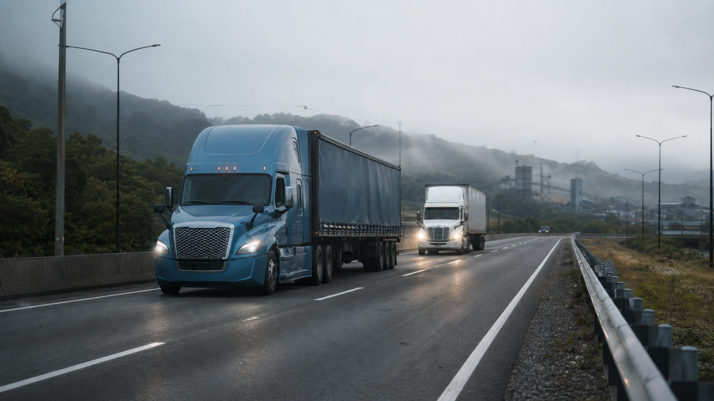

Rutas frecuentes
Evaluamos conexiones regionales entre El Salvador, Guatemala, Honduras y otros puntos según el caso.
Coordinamos rutas frecuentes, documentación fronteriza, responsables y entrega para operaciones entre El Salvador, Guatemala, Honduras y otros puntos regionales.

La alternativa depende de los países involucrados, la naturaleza de la carga, la prioridad y la continuidad que requiere la operación.
Evaluamos conexiones regionales entre El Salvador, Guatemala, Honduras y otros puntos según el caso.
La secuencia se revisa con los documentos, el régimen aplicable y los responsables de cada etapa.
La operación se coordina con aliados según disponibilidad y características de la carga; no se asume flota propia.
Seguimos los hitos relevantes para conectar la ruta con el destino y la comunicación operativa.
Los requisitos cambian por país, mercancía y régimen. La revisión previa ayuda a hacer visibles los pendientes.
Descripción, empaque, cantidades, peso y datos de salida disponibles.
Países involucrados, documento regional aplicable y referencias de la operación.
Responsables, requisitos documentales y siguiente acción ante cada transición.
El objetivo no es prometer que no habrá variables, sino entenderlas antes de que afecten el siguiente movimiento.
Las diferencias entre documentos pueden requerir revisión antes de continuar.
Una ruta regional requiere coordinación entre más de un responsable y frontera.
Los pendientes detectados durante el tránsito reducen el margen de respuesta.
Conectamos transporte regional con revisión documental y aduanal cuando corresponde.
Cada ruta se confirma según carga, documentación y operación disponible.
Cuando origen, destino, carga y coordinación fronteriza hacen viable una alternativa terrestre regional.
Dependen del país, la mercancía y el régimen; se revisan soportes comerciales y documentos regionales que correspondan.
Networld coordina operaciones con aliados logísticos; la alternativa se confirma según la operación.